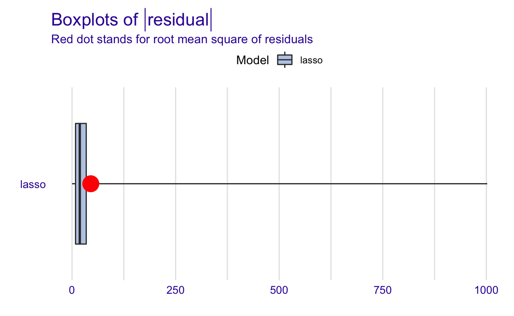

hide
library(tidyverse) # for data cleaning and plotting
library(tidymodels) # for modeling ... tidily
library(lubridate) # for date manipulation
library(openintro) # for the abbr2state() function
library(gplots) # for col2hex() function
library(RColorBrewer) # for color palettes
library(ggthemes) # for more themes (including theme_map())
library(plotly) # for the ggplotly() - basic interactivity
library(gganimate) # for adding animation layers to ggplots
library(transformr) # for "tweening" (gganimate)
library(gifski) # need the library for creating gifs but don't need to load each time
library(shiny) # for creating interactive apps
library(janitor)
library(stacks) # for stacking models
library(glmnet) # for regularized regression, including LASSO
library(ranger) # for random forest model
library(kknn) # for knn model
library(naniar) # for examining missing values (NAs)
library(moderndive) # for King County housing data
library(vip) # for variable importance plots
library(rmarkdown) # for paged tables
library(fastDummies)
library(usemodels) # for suggesting step_XXX() functions
library(readr)
library(kableExtra)
library(DALEX) # model Agnostic Language for exploration and explanation (for model interpretation)
library(DALEXtra)
theme_set(theme_minimal())
Introduction
The financial market is a strange place that is very hard to navigate around. We have seen Warren Buffett, Ray Dalio, Charlie Munger - the very very best who have had billions of dollars. Others, 95% of the population, lose the money instead.
So, how are the best of the best pick its stocks? It is from the fundamental, the technical side or the sentimental side? Within this paper, we hope to bring another perspective, using machine learning models to predict the profitability of the stock price.
Paper Outline
First, we will list and explain the definition of each variable in our dataset. There are 25 variables in total as listed below. The variable we are going to predict is PROFIT. Then, we will start to process our data by merging with the macro data and removing some unwanted variables. After processing the data, we will have a data visualization section that shows the distribution and relationship between some variables. And to find the best model, we choose to explore three machine learning models which are LASSO, Random forest and Stacking models. We use a stacking method to create the stacking model by combining three models (Lasso, Random Forest, and KNN). Lastly, we will make a stock return prediction for 2021 using the trained model with the lowest R-squared and RMSE.
List of Variables
For the dataset, we includes financial information on companies in the S&P 500 stock index from 1999-2021. This information was scraped from Yahoo Finance in November of 2021, and collected in a csv format for data analysis. The information includes metrics like sales, earnings, cogs, stock price, and market sector as well as macroeconomic data such as GDP or Money Supply. The goal is to analyze and model this data to better improve projections for a companys future profitability. The variables in the data set are described below:
| Variable | Meaning |
|---|---|
| YEAR | The financial year of the company |
| COMPANY | The companys stock abbreviation symbol |
| MARKET.CAP | The total market capitalization of the company (Volume * Price) |
| EARNINGS | The earnings in dollars for the previous year for the given company |
| SALES | How much the company sold in dollars last year |
| CASH | How much cash the company has in dollars at the end of the previous year |
| Name | The full name of the company |
| Sector | The name of the sector that the company is a part of |
| Earnings_next_year | The amount of money in dollars that the company earns in the following year |
| PRICE | The price of the stock when it is bought |
| Sell | The price of the stock when it is sold |
| VOLUME | The total number of shares that the company holds |
| COGS | The total amount the company paid as a cost directly related to the sale of products |
| INVESTMENT | The total asset or item acquired with the goal of generating income or appreciation |
| RECIEVABLE | The debts owed to a company by its customers for goods that have been delivered or used but not yet paid for |
| INVENTORY | How much raw materials used in production as well as the goods produced that are available for sale |
| DEBTS | How much money the company borrow from other parties |
| CPALTT01USM657N_PC1 | The percentage change in CPI (measure of inflation) |
| GDP | The monetary value of all finished goods and services made within a country |
| GDP_PC1 | The percentage change in GDP |
| T10Y2Y | Ten year treasury bonds minus two year treasury bonds |
| M1SL | The total currency and other liquid instruments in a countrys economy |
| M1SL_PC1 | The percentage change in money supply |
| Earnings_next_year | How much profit that a company produces next year |
| PROFIT | How much the money made or lost on an investment |
Loading data
Data Preprocessing
For the data preprocessing, we combined our data sources and filled missing values for some fundamental factors by using the median of that value in the sector for a certain year. We also created sector dummies in this step. We then dropped some variables that are not in our interests and the splited the testing and trainning data.
hide
final_data <- finalDATASET %>%
# make Sector dummy variables
dummy_cols(select_columns = "Sector") %>%
# merge with updated macro data
select(-CPALTT01USM657N_PC1,
-GDP,
-GDP_PC1,
-M1SL_PC1 ,
-M1SL,
-PRICE,
-Sell,
-COMPANY) %>%
merge(macro_data) %>%
# convert Macro factors from characters to numeric
mutate(across(c("CPALTT01USM657N_PC1","GDP","GDP_PC1","T10Y2Y","M1SL_PC1","M1SL"),
as.numeric)) %>%
group_by(YEAR,Sector) %>%
# replacing the missing value with median od the industry in that year
mutate(across(c(DEBTS,INVESTMENTS,CASH,VOLUME,EARNINGS,COGS,SALES,RECEIVABLE,INVENTORY),~replace(.,.==0,median(.)))) %>%
# delete less important factors -> Exchange can possibily be deleted
ungroup() %>%
mutate(across(c(!where(is.numeric),-"Name"),as.factor)) %>%
select(-Earnings_next_year,-observation_date) %>%
drop_na()
# filter out the data for 2021
final_data_2021 <- final_data %>%
filter(YEAR == 2021)
final_data <- final_data %>%
filter(YEAR < 2021)
# split the data
set.seed(327) #for reproducibility
data_split <- initial_split(final_data,
prop = .75)
data_training <- training(data_split)
data_testing <- testing(data_split)
# quick look of the data
final_data %>%
head(5) %>%
kbl() %>%
kable_styling(bootstrap_options = c("striped", "bordered", "hover", "condensed")) %>%
scroll_box(width = "100%", height = "300px")
| YEAR | T10Y2Y | VOLUME | MARKET CAP | EARNINGS | COGS | SALES | CASH | INVESTMENTS | RECEIVABLE | INVENTORY | DEBTS | Name | Sector | PROFIT | Sector_Communication Services | Sector_Consumer Discretionary | Sector_Consumer Staples | Sector_Energy | Sector_Financials | Sector_Health Care | Sector_Industrials | Sector_Information Technology | Sector_Materials | Sector_Real Estate | Sector_Utilities | CPALTT01USM657N_PC1 | GDP | GDP_PC1 | M1SL_PC1 | M1SL |
|---|---|---|---|---|---|---|---|---|---|---|---|---|---|---|---|---|---|---|---|---|---|---|---|---|---|---|---|---|---|---|
| 1999 | 0.2 | 6426000000 | 176614593750 | 1350072000 | 2917617000 | 8458777000 | 534652000 | 1156849000 | 1297867000 | 361986000 | 1900000 | Cisco Systems | Information Technology | 139.56789 | 0 | 0 | 0 | 0 | 0 | 0 | 0 | 1 | 0 | 0 | 0 | 65.9 | 9631.127 | 6.3 | 2 | 1102.3 |
| 1999 | 0.2 | 136000000 | 745875000 | 26900000 | 813900000 | 1458600000 | 202900000 | 0 | 220900000 | 31200000 | 51400000 | Quest Diagnostics | Health Care | 63.53276 | 0 | 0 | 0 | 0 | 0 | 1 | 0 | 0 | 0 | 0 | 0 | 65.9 | 9631.127 | 6.3 | 2 | 1102.3 |
| 1999 | 0.2 | 1603286905 | 32386397084 | 156200000 | 860700000 | 1331200000 | 198600000 | 0 | 795500000 | 0 | 374196000 | Invesco | Financials | 15.35842 | 0 | 0 | 0 | 0 | 1 | 0 | 0 | 0 | 0 | 0 | 0 | 65.9 | 9631.127 | 6.3 | 2 | 1102.3 |
| 1999 | 0.2 | 91032448 | 1217558992 | 102000000 | 991300000 | 1407900000 | 95600000 | 0 | 230000000 | 128300000 | 157900000 | PerkinElmer | Health Care | 156.29907 | 0 | 0 | 0 | 0 | 0 | 1 | 0 | 0 | 0 | 0 | 0 | 65.9 | 9631.127 | 6.3 | 2 | 1102.3 |
| 1999 | 0.2 | 73297297 | 848645267 | 56500000 | 162900000 | 522100000 | 61500000 | 0 | 288300000 | 0 | 374196000 | Arthur J. Gallagher & Co. | Financials | 11.09317 | 0 | 0 | 0 | 0 | 1 | 0 | 0 | 0 | 0 | 0 | 0 | 65.9 | 9631.127 | 6.3 | 2 | 1102.3 |
Data Visualization
We first explored distributions of our predictors and outcome. As the following graph suggested, all the numeric variables are severely right-skewed with some outliers. In our data, though the numbers of firms in each sector are unbalanced, we got a decent amount of data for each sector.
Then, we continued to explore the relationship between regressors and the outcome. By observation, we cant see a strong correlation between fundemental factors, such as investments and debts, and stock return. It may indicate that linear model is not an ideal model in this case.
hide
final_data %>%
ggplot(aes(x = INVESTMENTS, y = PROFIT,color = YEAR)) +
geom_point(alpha = 0.5)+
geom_smooth(se = FALSE) +
labs(title = "Relationship between investments and stock return")
hide
final_data %>%
ggplot(aes(x = DEBTS, y = PROFIT,color = YEAR)) +
geom_point(alpha = 0.5)+
geom_smooth(se = FALSE) +
labs(title = "Relationship between debts and stock return")
With this anamiation, we could see that the returns of stocks follow a cycle, which may be influenced by macroeconomic condition. The return in 1999 and 2019 seems to be the highest for all industries. Also, we noticed that some industries vary a lot year to year, such as IT and healthcare industry.
hide
sector_return_an<-final_data %>%
ggplot(aes(x = PROFIT, y = Sector)) +
geom_boxplot(aes(color = Sector),
alpha = .8,
size = 1) +
labs(title = "Spread of stock return in different sector",
subtitle = "YEAR: {closest_state}",
color = "") +
transition_states(YEAR)
animate(sector_return_an, duration = 25)
anim_save("sector_return.gif")
hide
knitr::include_graphics("sector_return.gif")

We further explored the relationship between the industry and the potential macroeconomic influencer using graphs below. Though the relationship doesnt seem to be linear, we do see how macroeconomic condition affect each industry differently and will account for that in our model.
hide
final_data %>%
group_by(YEAR,Sector) %>%
mutate(profit_por = PROFIT*`MARKET CAP`/(sum(`MARKET CAP`,na.rm = TRUE))) %>%
summarise(Sector_profit = sum(profit_por),
GDP_PC1 = mean(GDP_PC1),
CPALTT01USM657N_PC1 = mean(CPALTT01USM657N_PC1),
Sector = Sector[1]) %>%
ggplot(aes(x = CPALTT01USM657N_PC1,y = Sector_profit,color = Sector))+
geom_smooth(se = FALSE) +
labs(title = "Relationship between inflation and average return of a industry",
x = "Percent Change in CPI",
y = "Average Return of a sector")
hide
final_data %>%
group_by(YEAR,Sector) %>%
mutate(profit_por = PROFIT*`MARKET CAP`/(sum(`MARKET CAP`,na.rm = TRUE))) %>%
summarise(Sector_profit = sum(profit_por),
GDP_PC1 = mean(GDP_PC1),
CPALTT01USM657N_PC1 = mean(CPALTT01USM657N_PC1),
Sector = Sector[1]) %>%
ggplot(aes(x = GDP_PC1,y = Sector_profit,color = Sector))+
geom_smooth(se = FALSE) +
labs(title = "Relationship between GDP and average return of a industry",
x = "Percent Change in GDP",
y = "Average Return of a sector")
Lasso Model
Building Recipe
In the lasso model, to account for the fact the macroeconomic condition affects each industry differently, we also included the interaction term between GDP and sector dummies.
hide
return_recipe <- recipe(PROFIT ~ ., #short-cut, . = all other vars
data = data_training) %>%
# filter to only have data after 2020
step_filter(YEAR<2021) %>%
step_rm(Name,Sector,YEAR) %>%
#step_rm(GDP,M1SL,Name,Sector,YEAR) %>%
# add PE
step_mutate(PE = `MARKET CAP`/EARNINGS) %>%
# Normalize all variables except for GDP
step_normalize(all_predictors(),
-all_nominal(),
-starts_with("Sector_")) %>%
# Create interaction terms
step_interact(terms = ~c(GDP_PC1):starts_with("Sector_"))
# show the data in recipe
return_recipe %>%
prep(data_training) %>%
# using bake(new_data = NULL) gives same result as juice()
# bake(new_data = NULL)
juice() %>%
head(10) %>%
kbl() %>%
kable_styling(bootstrap_options = c("striped", "bordered", "hover", "condensed")) %>%
scroll_box(width = "100%", height = "400px")
| T10Y2Y | VOLUME | MARKET CAP | EARNINGS | COGS | SALES | CASH | INVESTMENTS | RECEIVABLE | INVENTORY | DEBTS | Sector_Communication Services | Sector_Consumer Discretionary | Sector_Consumer Staples | Sector_Energy | Sector_Financials | Sector_Health Care | Sector_Industrials | Sector_Information Technology | Sector_Materials | Sector_Real Estate | Sector_Utilities | CPALTT01USM657N_PC1 | GDP | GDP_PC1 | M1SL_PC1 | M1SL | PROFIT | PE |
GDP_PC1_x_Sector_Communication Services
|
GDP_PC1_x_Sector_Consumer Discretionary
|
GDP_PC1_x_Sector_Consumer Staples
|
GDP_PC1_x_Sector_Energy | GDP_PC1_x_Sector_Financials |
GDP_PC1_x_Sector_Health Care
|
GDP_PC1_x_Sector_Industrials |
GDP_PC1_x_Sector_Information Technology
|
GDP_PC1_x_Sector_Materials |
GDP_PC1_x_Sector_Real Estate
|
GDP_PC1_x_Sector_Utilities |
|---|---|---|---|---|---|---|---|---|---|---|---|---|---|---|---|---|---|---|---|---|---|---|---|---|---|---|---|---|---|---|---|---|---|---|---|---|---|---|---|
| -0.2723735 | -0.2776796 | -0.1486855 | -0.0917829 | 0.0580188 | -0.0545930 | -0.0288145 | -0.1272508 | 0.2467676 | -0.0229636 | -0.0859276 | 1 | 0 | 0 | 0 | 0 | 0 | 0 | 0 | 0 | 0 | 0 | 0.2262963 | 0.8675619 | -0.4855693 | -0.2097115 | 0.2272373 | 4.862932 | -0.0267204 | -0.4855693 | 0.000000 | 0.000000 | 0 | 0.0000000 | 0.0000000 | 0.0000000 | 0 | 0.0000000 | 0.0000000 | 0 |
| 1.0114941 | -0.3645483 | -0.3727731 | -0.3302514 | -0.3397521 | -0.4254379 | -0.1789608 | -0.1259446 | -0.2323726 | -0.3437728 | -0.1643141 | 0 | 0 | 0 | 0 | 0 | 1 | 0 | 0 | 0 | 0 | 0 | -0.3631769 | 0.5412816 | 0.1718292 | -0.1511675 | 0.0535694 | 31.080973 | 0.0427583 | 0.0000000 | 0.000000 | 0.000000 | 0 | 0.0000000 | 0.1718292 | 0.0000000 | 0 | 0.0000000 | 0.0000000 | 0 |
| 1.2449246 | 0.0645478 | 0.2414889 | 0.1524756 | 0.5823000 | 0.4369685 | -0.0259228 | -0.1280716 | 0.2363949 | 0.8964895 | -0.0985802 | 0 | 0 | 0 | 0 | 0 | 0 | 1 | 0 | 0 | 0 | 0 | 0.0123394 | -0.0149473 | -0.0473036 | -0.0502295 | -0.2689624 | 3.833942 | -0.0092193 | 0.0000000 | 0.000000 | 0.000000 | 0 | 0.0000000 | 0.0000000 | -0.0473036 | 0 | 0.0000000 | 0.0000000 | 0 |
| 0.8947789 | -0.3967183 | -0.3684586 | -0.1615117 | -0.3627474 | -0.3298581 | -0.1623081 | 0.7461020 | -0.1097635 | -0.3870415 | -0.1823930 | 0 | 0 | 0 | 0 | 1 | 0 | 0 | 0 | 0 | 0 | 0 | -0.2725085 | 0.3395715 | -0.0911302 | -0.1572237 | -0.0528192 | 14.945191 | -0.0785878 | 0.0000000 | 0.000000 | 0.000000 | 0 | -0.0911302 | 0.0000000 | 0.0000000 | 0 | 0.0000000 | 0.0000000 | 0 |
| 1.2449246 | 0.4939553 | -0.0346684 | 0.1980059 | 0.8122755 | 0.8375368 | -0.1811591 | -0.1045226 | -0.2200460 | 2.2750369 | -0.0843783 | 0 | 1 | 0 | 0 | 0 | 0 | 0 | 0 | 0 | 0 | 0 | 4.4982437 | -0.3347406 | -2.5454182 | -0.0744546 | -0.4180667 | 31.682900 | -0.0558299 | 0.0000000 | -2.545418 | 0.000000 | 0 | 0.0000000 | 0.0000000 | 0.0000000 | 0 | 0.0000000 | 0.0000000 | 0 |
| -1.4395259 | -0.3311706 | -0.4382907 | -0.3489899 | -0.3069941 | -0.4045970 | -0.1836506 | -0.1280716 | -0.2095608 | -0.3170927 | -0.1855777 | 0 | 0 | 0 | 0 | 0 | 0 | 0 | 0 | 1 | 0 | 0 | -0.3023032 | -0.5236186 | 0.9607075 | -0.3570810 | -0.5234134 | 20.995936 | -0.0307161 | 0.0000000 | 0.000000 | 0.000000 | 0 | 0.0000000 | 0.0000000 | 0.0000000 | 0 | 0.9607075 | 0.0000000 | 0 |
| -1.6729564 | -0.2237800 | -0.4552338 | -0.3738869 | -0.3595441 | -0.4587357 | -0.1945849 | -0.1280716 | -0.2405498 | -0.2850657 | -0.1941957 | 0 | 0 | 0 | 0 | 0 | 0 | 1 | 0 | 0 | 0 | 0 | -0.1707954 | -1.5399158 | 1.1360138 | -0.3590997 | -0.6322063 | 11.643812 | 0.1030321 | 0.0000000 | 0.000000 | 0.000000 | 0 | 0.0000000 | 0.0000000 | 1.1360138 | 0 | 0.0000000 | 0.0000000 | 0 |
| -1.2060955 | 0.3081610 | -0.0327128 | -0.1563413 | -0.2160964 | -0.2207183 | -0.1852450 | -0.1280716 | -0.1694473 | -0.1451228 | -0.1450700 | 0 | 0 | 1 | 0 | 0 | 0 | 0 | 0 | 0 | 0 | 0 | -0.0677982 | -1.7166315 | 1.0921872 | -0.3207433 | -0.6327673 | 15.293548 | 0.0406114 | 0.0000000 | 0.000000 | 1.092187 | 0 | 0.0000000 | 0.0000000 | 0.0000000 | 0 | 0.0000000 | 0.0000000 | 0 |
| -1.0893802 | -0.2873667 | -0.0954271 | -0.2312848 | -0.3613798 | -0.3727361 | -0.1369855 | -0.0416744 | -0.2173061 | -0.3870415 | -0.1942280 | 0 | 0 | 0 | 0 | 0 | 0 | 0 | 0 | 0 | 1 | 0 | -0.0852640 | -0.3358354 | 0.4347887 | -0.3651560 | -0.5242549 | -21.545285 | 0.0860387 | 0.0000000 | 0.000000 | 0.000000 | 0 | 0.0000000 | 0.0000000 | 0.0000000 | 0 | 0.0000000 | 0.4347887 | 0 |
| -0.2723735 | -0.3487931 | -0.2821674 | -0.3298109 | -0.3547113 | -0.4414711 | -0.1920806 | -0.1280716 | -0.2337550 | -0.3870415 | -0.1903547 | 0 | 0 | 0 | 0 | 0 | 0 | 0 | 0 | 0 | 1 | 0 | 0.2262963 | 0.8675619 | -0.4855693 | -0.2097115 | 0.2272373 | -12.137741 | 0.1864751 | 0.0000000 | 0.000000 | 0.000000 | 0 | 0.0000000 | 0.0000000 | 0.0000000 | 0 | 0.0000000 | -0.4855693 | 0 |
Select tuning parameter
hide
return_linear_mod <-
# Define a lasso model
# I believe default is mixture = 1 so probably don't need
linear_reg(mixture = 1) %>%
# Set the engine to "glmnet"
set_engine("glmnet") %>%
# The parameters we will tune.
set_args(penalty = tune()) %>%
# Use "regression"
set_mode("regression")
set.seed(456)
return_lm_wf <-
# Set up the workflow
workflow() %>%
# Add the recipe
add_recipe(return_recipe) %>%
# Add the modeling
add_model(return_linear_mod)
penalty_grid <- grid_regular(penalty(),
levels = 10)
return_cv <- vfold_cv(data_training, v = 5)
return_lm_tune <-
return_lm_wf %>%
tune_grid(
resamples = return_cv,
grid = penalty_grid
)
best_param<-return_lm_tune %>%
select_best(metric = "rmse")
return_lasso_final_wf <- return_lm_wf %>%
finalize_workflow(best_param)
return_lasso_final_mod <- return_lasso_final_wf %>%
fit(data = data_training)
# visulization for best param
set.seed(456)
return_lm_tune %>%
collect_metrics() %>%
filter(.metric == "rmse") %>%
ggplot(aes(x = penalty, y = mean)) +
geom_point() +
geom_line() +
scale_x_log10(
breaks = scales::trans_breaks("log10", function(x) 10^x),
labels = scales::trans_format("log10",scales::math_format(10^.x))) +
labs(x = "penalty", y = "rmse")
Lasso results
The table below shows the estimate of each predictor in the Lasso Model. We can see that indicators in macroeconomics are relatively important to predict the stock return. The change in inflation and GDP all remain significant after shrinking. The interaction terms between GDP and industries also showed importance, accounting for the fact that the macroeconomic condition affects each industry differently: GDP seems to affect the stock return in Communication Services, Energy, and Consumer Discretionary sectors less.
hide
return_lasso_final_mod %>%
pull_workflow_fit() %>%
tidy() %>%
arrange(desc(estimate)) %>%
kbl() %>%
kable_styling(bootstrap_options = c("striped", "bordered", "hover", "condensed")) %>%
scroll_box(width = "100%", height = "500px")
| term | estimate | penalty |
|---|---|---|
| M1SL | 52.2489802 | 0.0059948 |
| CPALTT01USM657N_PC1 | 22.8362276 | 0.0059948 |
| GDP_PC1 | 18.5139718 | 0.0059948 |
| (Intercept) | 17.4206737 | 0.0059948 |
| GDP_PC1_x_Sector_Utilities | 14.5169194 | 0.0059948 |
GDP_PC1_x_Sector_Consumer Staples
|
10.9623359 | 0.0059948 |
GDP_PC1_x_Sector_Health Care
|
10.0994574 | 0.0059948 |
| Sector_Information Technology | 9.1062940 | 0.0059948 |
| T10Y2Y | 8.3785234 | 0.0059948 |
GDP_PC1_x_Sector_Real Estate
|
7.9131832 | 0.0059948 |
| Sector_Communication Services | 7.4629557 | 0.0059948 |
| Sector_Health Care | 5.9942110 | 0.0059948 |
| Sector_Consumer Discretionary | 4.8412271 | 0.0059948 |
GDP_PC1_x_Sector_Information Technology
|
4.0219608 | 0.0059948 |
| Sector_Energy | 2.7587880 | 0.0059948 |
| COGS | 2.2012752 | 0.0059948 |
| GDP_PC1_x_Sector_Industrials | 2.0052201 | 0.0059948 |
| VOLUME | 0.9051955 | 0.0059948 |
| INVESTMENTS | 0.4845378 | 0.0059948 |
| CASH | 0.4031170 | 0.0059948 |
| EARNINGS | 0.3671604 | 0.0059948 |
| RECEIVABLE | 0.1688682 | 0.0059948 |
| INVENTORY | 0.1677270 | 0.0059948 |
| GDP_PC1_x_Sector_Financials | 0.0413482 | 0.0059948 |
| Sector_Materials | 0.0000000 | 0.0059948 |
| PE | -0.2304146 | 0.0059948 |
| DEBTS | -0.2444685 | 0.0059948 |
| Sector_Industrials | -0.4250661 | 0.0059948 |
| GDP_PC1_x_Sector_Materials | -1.0239217 | 0.0059948 |
GDP_PC1_x_Sector_Communication Services
|
-1.4192763 | 0.0059948 |
| Sector_Financials | -1.5534082 | 0.0059948 |
| SALES | -3.2886701 | 0.0059948 |
| Sector_Real Estate | -3.3504621 | 0.0059948 |
| MARKET CAP | -3.8678288 | 0.0059948 |
| Sector_Consumer Staples | -5.4154183 | 0.0059948 |
| GDP_PC1_x_Sector_Energy | -5.8821361 | 0.0059948 |
GDP_PC1_x_Sector_Consumer Discretionary
|
-8.6297519 | 0.0059948 |
| Sector_Utilities | -8.7405789 | 0.0059948 |
| M1SL_PC1 | -11.4973966 | 0.0059948 |
| GDP | -16.0930330 | 0.0059948 |
Model Evaluation
Prediciton precision
The Lasso model does not perform well. It only explains 20% of the varaince in stock return and it also has a relatively high rmse of around 46.
hide
# A tibble: 1 x 1
mean_rsq
<dbl>
1 0.208hide
# A tibble: 1 x 1
mean_rmse
<dbl>
1 45.5hide
set.seed(456)
prediction <- predict(
return_lasso_final_mod,
new_data = data_training)
training_pred<-data_training %>%
mutate(.pred = prediction$.pred)
training_pred %>%
ggplot(aes(x = PROFIT,
y = .pred,
color = YEAR)) +
geom_point(alpha = .5,
size = .5) +
geom_smooth(se = FALSE) +
geom_abline(slope = 1,
intercept = 0,
color = "darkred") +
geom_text(aes(label = Name),label.size = 0.15,data = training_pred %>% filter(PROFIT>400) )+
labs(x = "Actual Return",
y = "Predicted Return") +
scale_color_viridis_b()
Overfitting
Below shows the r-square and rmse on testing data. They are very similar to those on trainning data so we would safely conclude that our model did not overfit.
hide
return_lasso_test <- return_lasso_final_wf %>%
last_fit(data_split)
# Metrics for model applied to test data
return_lasso_test %>%
collect_metrics()
# A tibble: 2 x 4
.metric .estimator .estimate .config
<chr> <chr> <dbl> <chr>
1 rmse standard 52.6 Preprocessor1_Model1
2 rsq standard 0.206 Preprocessor1_Model1The following graphs show the performance of the model on the testing data:
hide
test_prediction <- predict(
return_lasso_final_mod,
new_data = data_testing)
testing_lasso_pred<-data_testing %>%
mutate(.pred = test_prediction$.pred)
testing_lasso_pred %>%
ggplot(aes(x = PROFIT,
y = .pred,
color = YEAR)) +
geom_point(alpha = .5,
size = .5) +
geom_smooth(se = FALSE) +
geom_abline(slope = 1,
intercept = 0,
color = "darkred") +
geom_text(aes(label = Name),label.size = 0.15,data = testing_lasso_pred %>% filter(PROFIT>300) )+
labs(x = "Actual Return",
y = "Predicted Return") +
scale_color_viridis_b()
Interpretable Machine Learning
Again, the boxplot and the histogram of residuals, the model does not predict the return well and this may because some extreme values.
hide
lasso_explain <-
explain_tidymodels(
model = return_lasso_final_mod,
data = data_training %>% select(-PROFIT),
y = data_training %>% pull(PROFIT),
label = "lasso"
)
Preparation of a new explainer is initiated
-> model label : lasso
-> data : 7172 rows 30 cols
-> data : tibble converted into a data.frame
-> target variable : 7172 values
-> predict function : yhat.workflow will be used ( [33m default [39m )
-> predicted values : No value for predict function target column. ( [33m default [39m )
-> model_info : package tidymodels , ver. 0.1.3 , task regression ( [33m default [39m )
-> predicted values : numerical, min = -49.61277 , mean = 19.22262 , max = 121.2461
-> residual function : difference between y and yhat ( [33m default [39m )
-> residuals : numerical, min = -146.2719 , mean = -4.401566e-14 , max = 1002.161
[32m A new explainer has been created! [39m hide
lasso_mod_perf <- model_performance(lasso_explain)
hist_plot <-
plot(lasso_mod_perf,
geom = "histogram")
box_plot <-
plot(lasso_mod_perf,
geom = "boxplot")
hist_plot
hide
box_plot

Below shows the feature importance plots generated by two different methods. We could see that macroeconomic indicators remained importance in both of the plots but market cap seems to be an crucial factor when we use permutation method.
hide
set.seed(10) #since we are sampling & permuting, we set a seed so we can replicate the results
lasso_var_imp <-
model_parts(
lasso_explain
)
plot(lasso_var_imp, show_boxplots = TRUE)
hide
return_lasso_final_mod %>%
pull_workflow_fit() %>%
vip()
Random Forest Model
Building Random Forest model
To build the random forest model, we set up recipe using our training data (data_training), define model with mtry = 6, min_n = 10 and numbers of tree = 200, create ranger workflow, and then we can fit the model.
hide
# set up recipe
ranger_recipe <-
recipe(PROFIT ~ ., #short-cut, . = all other vars
data = data_training) %>%
step_filter(YEAR<2021) %>%
# remove the unwanted variables
step_rm(YEAR,Name,GDP,M1SL,Sector) %>%
# add PE
step_mutate(PE = `MARKET CAP`/EARNINGS)
#define model
ranger_spec <-
rand_forest(mtry = 6,
min_n = 10,
trees = 200) %>%
set_mode("regression") %>%
set_engine("ranger")
#create workflow
ranger_workflow <-
workflow() %>%
add_recipe(ranger_recipe) %>%
add_model(ranger_spec)
#fit the model
set.seed(712) # for reproducibility - random sampling in random forest choosing number of variables
ranger_fit <- ranger_workflow %>%
fit(data_training)
Random Forest results
The table below shows the OOB error (MSE), OOB RMSE (Root mean square error), and R squared of the stock return predictions using the random forest model above.
hide
metrics value
1 OOB error 1545.1346996
2 OOB RMSE 39.3082014
3 R Squared 0.4086307Model Evaluation
Prediciton precision (Traning data)
Even though the mean rmse from the random forest (39.30787) seems to be fairly high but it is still lower than the LASSO model of 46. Thus, random forest model performs better.
hide
set.seed(1211) # for reproducibility
data_cv <- vfold_cv(data_training, v = 5)
metric <- metric_set(rmse)
ctrl_res <- control_stack_resamples()
ranger_cv <- ranger_workflow %>%
fit_resamples(data_cv,
metrics = metric,
control = ctrl_res)
# Evaluation metrics averaged over all folds:
collect_metrics(ranger_cv)
# A tibble: 1 x 6
.metric .estimator mean n std_err .config
<chr> <chr> <dbl> <int> <dbl> <chr>
1 rmse standard 39.3 5 2.45 Preprocessor1_Model1We also plot a graph showing the actual return vs predicted return.
hide
ranger_prediction <- predict(
ranger_fit,
new_data = data_training)
ranger_training_pred<-data_training %>%
mutate(.pred = ranger_prediction$.pred)
ranger_training_pred %>%
ggplot(aes(x = PROFIT,
y = .pred)) +
geom_point(alpha = .5,
size = .5) +
geom_smooth(se = FALSE) +
geom_abline(slope = 1,
intercept = 0,
color = "darkred") +
labs(x = "Actual Return",
y = "Predicted Return")
Prediciton precision (Testing data)
The table below shows the rmse on testing data. It is a bit higher but fairly similar to the error on training data so we could say that our model did not overfit.
hide
set.seed(1211) # for reproducibility
data_cv <- vfold_cv(data_testing, v = 5)
metric <- metric_set(rmse)
ctrl_res <- control_stack_resamples()
ranger_cv <- ranger_workflow %>%
fit_resamples(data_cv,
metrics = metric,
control = ctrl_res)
# Evaluation metrics averaged over all folds:
collect_metrics(ranger_cv)
# A tibble: 1 x 6
.metric .estimator mean n std_err .config
<chr> <chr> <dbl> <int> <dbl> <chr>
1 rmse standard 47.4 5 4.34 Preprocessor1_Model1Below is the graph showing the actual return vs.predicted return on testing data.
hide
ranger_test_prediction <- predict(
ranger_fit,
new_data = data_testing)
ranger_test_pred<-data_testing %>%
mutate(.pred = ranger_test_prediction$.pred)
ranger_test_pred %>%
ggplot(aes(x = PROFIT,
y = .pred)) +
geom_point(alpha = .5,
size = .5) +
geom_smooth(se = FALSE) +
geom_abline(slope = 1,
intercept = 0,
color = "darkred") +
labs(x = "Actual Return",
y = "Predicted Return")
Interpretable Machine Learning
Based on the box-plot and the histogram below, the residuals mostly lie between -50 to 50. But there are some a few outliners that can go up to 400.
hide
rf_explain <-
explain_tidymodels(
model = ranger_fit,
data = data_training %>% select(-PROFIT),
y = data_training %>% pull(PROFIT),
label = "rf"
)
Preparation of a new explainer is initiated
-> model label : rf
-> data : 7172 rows 30 cols
-> data : tibble converted into a data.frame
-> target variable : 7172 values
-> predict function : yhat.workflow will be used ( [33m default [39m )
-> predicted values : No value for predict function target column. ( [33m default [39m )
-> model_info : package tidymodels , ver. 0.1.3 , task regression ( [33m default [39m )
-> predicted values : numerical, min = -76.57776 , mean = 19.57231 , max = 438.0276
-> residual function : difference between y and yhat ( [33m default [39m )
-> residuals : numerical, min = -101.4695 , mean = -0.3496883 , max = 599.5611
[32m A new explainer has been created! [39m hide
rf_mod_perf <- model_performance(rf_explain)
hist_plot <-
plot(rf_mod_perf,
geom = "histogram")
box_plot <-
plot(rf_mod_perf,
geom = "boxplot")
hist_plot
hide
box_plot
According to the feature importance bar chart below, we can see that the top three important features are market cap, earnings, M1SL_PC1, and GDP_PC1.
hide
set.seed(10) #since we are sampling & permuting, we set a seed so we can replicate the results
rf_var_imp <-
model_parts(
rf_explain
)
plot(rf_var_imp, show_boxplots = TRUE)
After creating two models, we then move on to the final method: stacking. For the stacking model, we also add one more model: KNN to improve the accuracy rate of the model.
Stacking Model
Random Forest Candidate
hide
ranger_recipe <-
recipe(formula = PROFIT ~ .,
data = data_training) %>%
# Make these evaluative variables, not included in modeling
update_role(all_of(c("YEAR", "Name", "Sector")),
new_role = "evaluative")
ranger_spec <-
rand_forest(mtry = 6,
min_n = 10,
trees = 200) %>%
set_mode("regression") %>%
set_engine("ranger")
ranger_workflow <-
workflow() %>%
add_recipe(ranger_recipe) %>%
add_model(ranger_spec)
ranger_fit <- ranger_workflow %>%
fit(data_training)
set.seed(1211) # for reproducibility
final_data_cv <- vfold_cv(data_training, v = 5)
metric <- metric_set(rmse)
ctrl_res <- control_stack_resamples()
ranger_cv <- ranger_workflow %>%
fit_resamples(final_data_cv,
metrics = metric,
control = ctrl_res)
LASSO Candidate
hide
# lasso recipe and transformation steps
lasso_final_data_recipe <- recipe(PROFIT ~ .,
data = data_training) %>%
#step_rm(Name, Sector, YEAR, COMPANY) %>%
update_role(all_of(c("Name",
"Sector",
"YEAR")),
new_role = "evaluative") %>%
step_dummy(all_nominal(),
-all_outcomes(),
-has_role(match = "evaluative")) %>%
step_normalize(all_predictors(),
-all_nominal())
#define lasso model
lasso_mod <-
linear_reg(mixture = 1) %>%
set_engine("glmnet") %>%
set_args(penalty = tune()) %>%
set_mode("regression")
# create workflow
lasso_wf <-
workflow() %>%
add_recipe(lasso_final_data_recipe) %>%
add_model(lasso_mod)
# penalty grid - changed to 10 levels
penalty_grid <- grid_regular(penalty(),
levels = 10)
# add ctrl_grid - assures predictions and workflows are saved
ctrl_grid <- control_stack_grid()
# tune the model using the same cv samples as random forest
lasso_tune <-
lasso_wf %>%
tune_grid(
resamples = final_data_cv,
grid = penalty_grid,
metrics = metric,
control = ctrl_grid
)
KNN Candidate
hide
# create a model definition
knn_mod <-
nearest_neighbor(
neighbors = tune("k")
) %>%
set_engine("kknn") %>%
set_mode("regression")
# create the workflow
knn_wf <-
workflow() %>%
add_model(knn_mod) %>%
add_recipe(lasso_final_data_recipe)
# tune it using 4 tuning parameters
knn_tune <-
knn_wf %>%
tune_grid(
final_data_cv,
metrics = metric,
grid = 4,
control = ctrl_grid
)
Stacking all candidates
By showing and visualize the members in our stacking model, we could see that random forest model contribute the most.
hide
final_data_stack <-
stacks() %>%
add_candidates(ranger_cv) %>%
add_candidates(lasso_tune) %>%
add_candidates(knn_tune)
final_data_blend <-
final_data_stack %>%
blend_predictions()
final_data_blend
# A tibble: 2 x 3
member type weight
<chr> <chr> <dbl>
1 ranger_cv_1_1 rand_forest 0.835
2 knn_tune_1_4 nearest_neighbor 0.254hide
autoplot(final_data_blend)
# A tibble: 1 x 1
mean_rmse
<dbl>
1 39.7hide
final_data_final_stack <- final_data_blend %>%
fit_members()
Table below shows the top10 prediction when we applied the model to testing data. Here, we can see that when the model predicts company with high rate of return, the actual return is high as well.
hide
# A tibble: 10 x 3
Name .pred PROFIT
<chr> <dbl> <dbl>
1 Penn National Gaming 229. 1145.
2 Devon Energy 221. 239.
3 Nvidia 217. 203.
4 Caesars Entertainment 213. 705.
5 Intuit 211. 41.8
6 Ansys 205. 81.8
7 PVH 195. 207.
8 Occidental Petroleum 192. 158.
9 Verisign 192. 571.
10 Illumina 191. 192. Comparison of the three models
With the three models, we then move on to see which model performs the best:
Lasso model
hide
data_frame(return_lm_tune %>%
select(id, .metrics) %>%
unnest(.metrics) %>%
filter(.metric == "rsq") %>%
filter(.config == "Preprocessor1_Model08") %>%
summarise(mean_rsq = mean(.estimate)),
return_lm_tune %>%
select(id, .metrics) %>%
unnest(.metrics) %>%
filter(.metric == "rmse") %>%
filter(.config == "Preprocessor1_Model08") %>%
summarise(mean_rmse = mean(.estimate)))
mean_rsq mean_rmse
1 0.2079744 45.48327Random Forest Model
hide
#OOB RMSE
data.frame(mean_rmse = sqrt(ranger_fit$fit$fit$fit$prediction.error),
# R squared
mean_rsq = ranger_fit$fit$fit$fit$r.squared)
mean_rmse mean_rsq
1 38.73345 0.4257979Stacking Model
hide
mean_rmse mean_rsq
1 39.73178 0.4162962Here, we can see that compared to the three models, even though Random Forest performs better than the stacking model, stacking model use features in the Random Forest along with additional features from KNN and lasso. With that reason, we will choose stacking model as our model choice.
Stock Return Prediction for 2021
After picking our model, we then move on to use the model to predict the potential profit for 2021:
hide
set.seed(456)
ytd = c(80.30, 39.77, -8.26, 11.29, 22.08, 132.51, 137.04, -4.22, 39.77, 20.76, 26.41, 26.34, 41.50, 178.43, 18.70, 87.29, -6.16, 52.58, 8.70, -13.70)
set.seed(456)
pred_2021<-final_data_final_stack %>%
predict(new_data = final_data_2021) %>%
bind_cols(final_data_2021) %>%
select(Name, .pred) %>%
arrange(desc(.pred)) %>%
head(20) %>%
mutate(actual_ytd = ytd)
pred_2021 %>%
kbl() %>%
kable_styling(bootstrap_options = c("striped", "bordered", "hover", "condensed")) %>%
column_spec(c(1,3), color = ifelse(pred_2021$actual_ytd < 0, "red", "darkgreen")) %>%
scroll_box(width = "100%", height = "500px")
| Name | .pred | actual_ytd |
|---|---|---|
| APA Corporation | 67.67959 | 80.30 |
| Marathon Oil | 63.13998 | 39.77 |
| News Corp (Class B) | 63.06597 | -8.26 |
| Under Armour (Class C) | 62.82090 | 11.29 |
| DuPont | 62.70736 | 22.08 |
| Ford | 62.55623 | 132.51 |
| Norwegian Cruise Line Holdings | 62.50470 | 137.04 |
| Under Armour (Class A) | 61.68342 | -4.22 |
| Carnival Corporation | 61.52755 | 39.77 |
| DXC Technology | 59.89012 | 20.76 |
| Halliburton | 59.45987 | 26.41 |
| Raytheon Technologies | 58.35294 | 26.34 |
| Devon Energy | 57.31403 | 41.50 |
| Schlumberger | 57.14758 | 178.43 |
| ConocoPhillips | 56.75287 | 18.70 |
| Baker Hughes | 56.39542 | 87.29 |
| Hess Corporation | 56.39404 | -6.16 |
| Southwest Airlines | 56.14967 | 52.58 |
| Bristol Myers Squibb | 56.04499 | 8.70 |
| Boeing | 55.79926 | -13.70 |
Conclusion
The weakness of our model is that the average error of prediction is still very high so if one wants to predict the exact return, our model wont be ideal. But the strength of our model is that for stocks with extremely high returns, even though the prediction might not be that precise, highly likely, our model will predict positive returns. That means, in real life, if we choose the top stocks to invest in based on our prediction, it is less likely we are going to lose money. Another strength of using a model to help with investment is that it excludes our subjective feelings.
To make the model better, we could do more research and add more regressors. For example, some financial indicators that are important for value investing are not reflected in our model due to the lack of data. Examples of those variables include Price to Sales, Price to Cash Flow, and Price to Book. Also, since we are concerned about the long-term return and all fundamental factors usually take longer to affect the firms, its probably helpful to do return in 2 years or 3 years or include lag of some variables in our model.